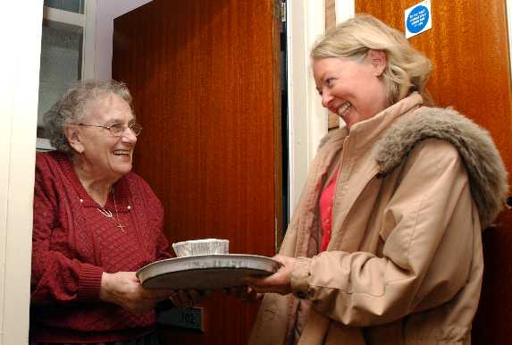
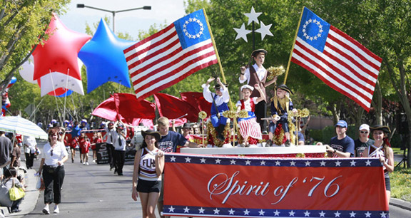
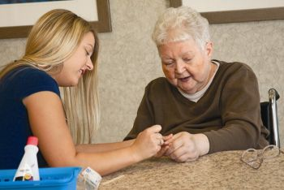

Volunteer Opportunities
Host Your Own Event
Your Neighborhood | By YouDid you know that you can host your own activities, classes, and volunteering opportunities on Revel?

Meals on Wheels
East Liberty | By Lisa
Come along with Judd and Hanna, the Venture Outdoors puppy, for a 6-8 mile hike through Roaring Run Natural Area. We’ll witness the natural succession of second and third growth mixed mesophytic forest and learn about the flora and fauna as we traverse the hilly woodlands of this beautiful self-contained watershed in Forbes State Forest. This hike is dog friendly!
Library Sorting
South Side | By Chin-Wei
Join us for a classroom introduction to flat-water kayaking. Venture Outdoors leaders will over kayaks, paddles, PFDs, and paddling gear for day and overnight excursions. They'll cover locations to launch and websites and other resources to consider before going out on your own. Stop by to get a great feet-on-the-ground intro, and to hear about all upcoming outings planned for this summer!

Fourth of July Parade
Shadyside | By Jacob
This tour is organized by our British company, Sunbird, and starts and ends in London. The cost of the group flights between London and Tbilisi is included in the tour cost. We strongly urge that you join the tour in London, as it removes a range of possible problems that might occur if you attempt to meet the group in the tour country. You can choose, however, to make your own travel arrangements to Tbilisi; you would receive a corresponding discount in the tour cost should you decide to do this.
Meals on Wheels
Shadyside | By Joan
Come along with Judd and Hanna, the Venture Outdoors puppy, for a 6-8 mile hike through Roaring Run Natural Area. We’ll witness the natural succession of second and third growth mixed mesophytic forest and learn about the flora and fauna as we traverse the hilly woodlands of this beautiful self-contained watershed in Forbes State Forest. This hike is dog friendly!

Personal Mentorship
Oakland | By Kate
Join us for a classroom introduction to flat-water kayaking. Venture Outdoors leaders will over kayaks, paddles, PFDs, and paddling gear for day and overnight excursions. They'll cover locations to launch and websites and other resources to consider before going out on your own. Stop by to get a great feet-on-the-ground intro, and to hear about all upcoming outings planned for this summer!

Individual Assistance
Oakland | By Kate
This tour is organized by our British company, Sunbird, and starts and ends in London. The cost of the group flights between London and Tbilisi is included in the tour cost. We strongly urge that you join the tour in London, as it removes a range of possible problems that might occur if you attempt to meet the group in the tour country. You can choose, however, to make your own travel arrangements to Tbilisi; you would receive a corresponding discount in the tour cost should you decide to do this.
Highway Pickup
Highland Park | By Jennifer
Explore a local park on this half day adventure. We'll hike at a steady pace over 4-6 miles on moderate terrain. These hikes are focused on learning a new area, enjoying the company of others and getting a great workout! (This hike is dog friendly!)